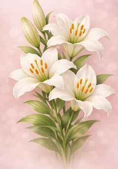

Il giglio bianco – purezza, luce e bellezza eterna

Il Lilium candidum, conosciuto come giglio bianco o giglio della Madonna, è una delle specie più antiche e simboliche del genere Lilium. Originario del Mediterraneo orientale — Grecia, Siria e Palestina — è coltivato fin dall’antichità per la sua bellezza e il suo profumo intenso. Nei secoli si è diffuso in tutta Europa, soprattutto nei giardini monastici e nei cortili delle chiese, dove veniva considerato un fiore sacro.
Da sempre associato alla purezza, alla verginità e alla luce spirituale, il giglio bianco rappresenta la Vergine Maria nella tradizione cristiana. Nell’arte rinascimentale, l’arcangelo Gabriele porta un giglio nell’Annunciazione, simbolo della purezza di Maria. Nella mitologia greca si narra che il giglio nacque dalle lacrime di Era, la dea del matrimonio.
Pianta perenne bulbosa, rinasce ogni anno dal suo bulbo producendo fiori di straordinaria eleganza.
In passato il giglio bianco veniva impiegato in fitoterapia e cosmesi naturale:
Una leggenda cristiana narra che il giglio bianco nacque dal sudore di Cristo durante la Passione. Nell’antica Grecia era fiore nuziale, simbolo di amore eterno e fertilità. In epoca vittoriana regalare un giglio bianco significava ammirazione sincera e rispetto profondo.
È uno dei pochi fiori che unisce sacro e profano, presente nei templi e nei giardini privati. Il suo profumo è stato descritto dai poeti come “l’essenza della luce”.
Il Lilium bianco è molto più di un fiore: è un simbolo universale di purezza, rinascita e bellezza eterna. Unisce mito, fede e natura in un’unica forma perfetta, che da millenni ispira artisti, poeti e giardinieri.
“Il giglio bianco è la luce che fiorisce.”